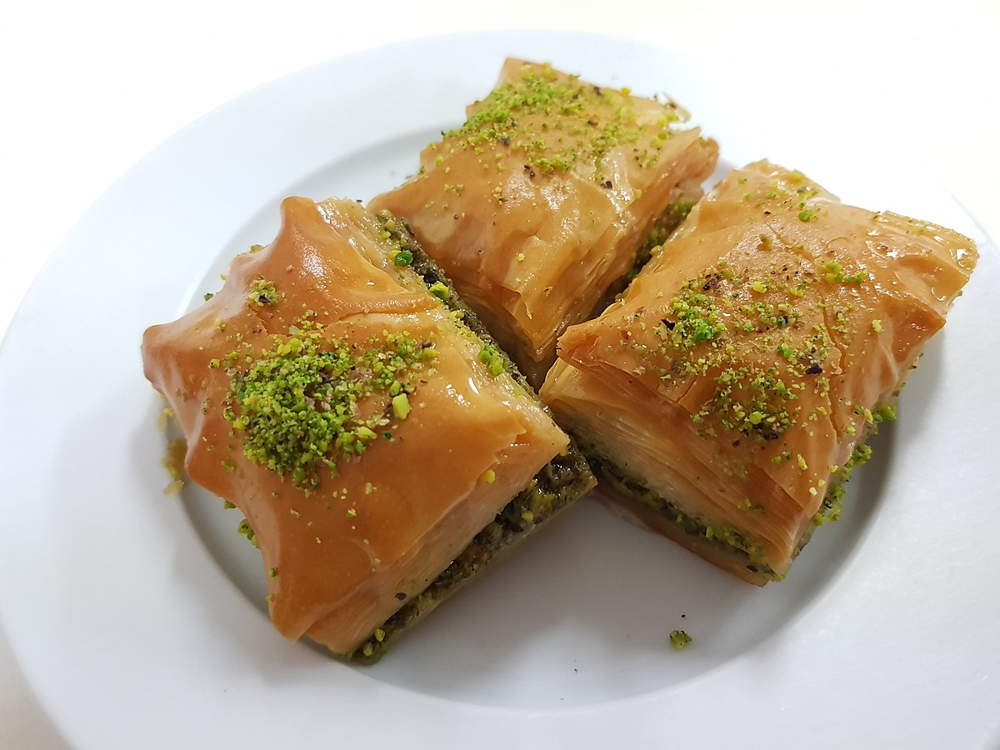

DESSERT

The dessert of the day is baklava. It is from the middle east, Turkey precisely. If prepared in accordance with traditional
methods baklava is one of the most health friendly and delicious desserts of all time.
Ingredients
- 1 pound chopped nuts
- 1 pound phyllo dough
- 1 cup butter, melted
- 1/3 cup sugar
- 1 teaspoon ground cinnamon
- 1/3 teaspoon ground cloves
Method
- Lightly grease a 9x13 pan and set the oven to 350°F.
- Thaw the phyllo dough according to manufacturer's directions
(this may take overnight). When thawed, roll out the dough and cut
the dough in half so the sheets will fit in the pan. Cover with a damp
towel to keep it from drying out.
- Process the nuts until in small, even sized pieces. Combine with
sugar, cinnamon, and cloves. In a separate bowl, melt the butter
in the microwave.
- Spoon on a thin layer of the nut mixture. Cover with two more sheets
of phyllo, brushing each one with butter. Continue to repeat the nut
mixture and two buttered sheets of phyllo until the nut mixture is all
used up. The top layer should be 8 phyllo sheets thick, each sheet being
individually buttered. Do not worry if the sheets crinkle up a bit, it
will just add more texture.
- Cut into 24 equal sized squares using a sharp knife. Bake at 350°F for
30-35 minutes or until lightly golden brown, and edges appear slightly
crisp.
- Spoon the cooled syrup over the hot baklava and let cool for at least
4 hours. Garnish with some finely crushed pistachios of desired.